Adjust
Introduction
Adjust is a GFE SmartTool
that performs basic math functions like add, subtract, multiply and divide on a grid.
However, as is often useful with GFE, it allows options related to elevation (i.e.,
adding mostly at higher elevations, or subtracting mostly at lower elevations), and
related to edit areas (i.e., adding most in the center of the edit area, or adding
nearly the same amount everywhere – but ‘ramping down’ to no change at the edge of
the edit area). You can combine these options in a variety of ways. This tool
really takes the place of many other tools previously on the SmartTool Repository
like UpMtn and DownValley, but it also provides many more combinations due to the
ability to specify the edge effect and elevation effect options ‘on-the-fly’.
How
the Procedure Works
The basic function of the tool
is to take the specified value and perform the specified action of Add, Subtract, Multiply
or Divide:
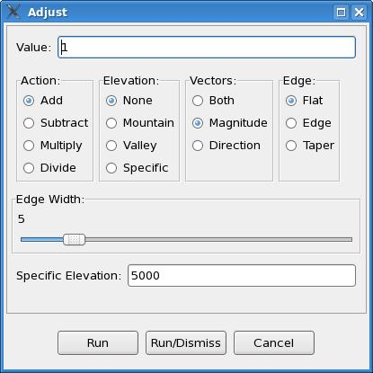
The value can be any number,
either an integer or floating-point number, and can be negative (multiplying by negative
one is especially useful for changing the sign of a grid). The final grid values,
however, will not be allowed to lie outside the range of valid values for that particular
grid parameter. Dividing by zero is, of course, not allowed.
Adding and Subtracting is useful for most parameters, such as adding or subtracting a
few degrees from temperatures, or adding or subtracting a few percent from PoPs.
Multiply and Divide are most useful with certain parameters, such as increasing QPF
by multiplying by 1.5, or dividing by 2 to cut PoPs in half.
Vector Option
For vector parameters, the
setting of the GFE Vector Editing Mode is ignored, but instead is controlled by the
vector setting on the tool itself (see graphic above).
If the vector setting is “Both” and the value is set to 10.0, then performing an
Addition operation will add 10 knots to the magnitude of a wind, and add 10 degrees
to the direction (veer the wind by 10 degrees). This is only rarely what you want,
so the Both option is rarely used. More typically you only operate on the vector
Magnitude, and that is why it is selected by default when you start the tool.
Edge Option
The tool works either on an
edit area or the entire grid. When working on an edit area, the edge options can be
useful to “blend” your changes into the rest of the grid.
The Flat option, makes no attempt to “blend” your changes into the edges of your edit
area. For example, if you start with a constant grid of 1 (let’s say it is a PoP grid)
and define an edit area.
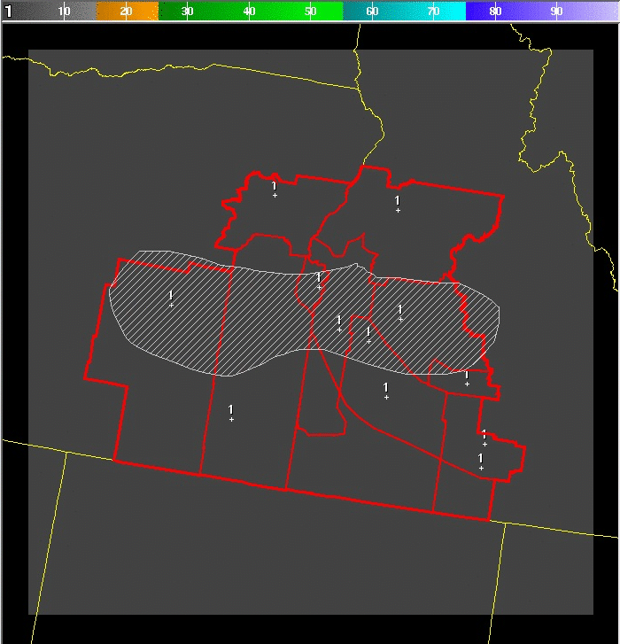
If you then add a value of 50, with an edge option of flat, you will get:
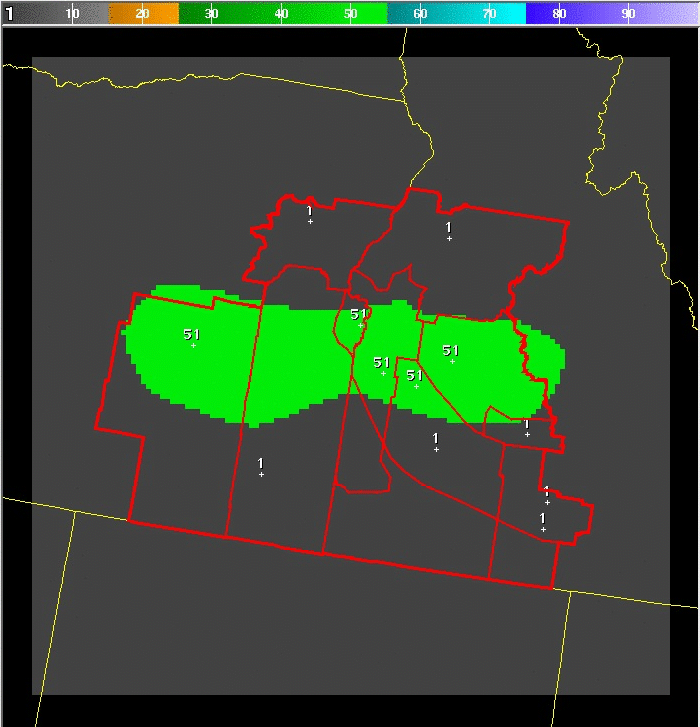
Note that inside the edit areas, the value is now 51 (50 + 1), and there has been no
attempt to “blend” these values into the rest of the grid. If, however, the edge option
is chosen then the result would be:

Note that most of the edit area still contains the value of 51 (50+1), but near the
edges of the edit area, the adjustment is “scaled back” down to zero along the edge,
so that it “blends in” with the rest of the grid. The width of the edge effect is
controlled by the Edge Width slider which defaults to 5, meaning the values are
blended in over 5 pixels, or gridboxes. If, however, the taper option is chosen
then the result of adding 50 will be:
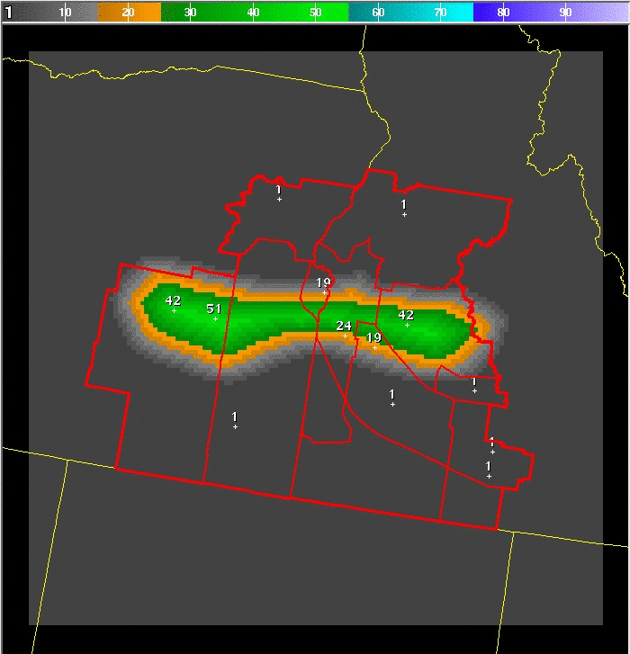
Note that only one pixel, furthest from the edge of the edit area, receives the full
adjustment of adding 50 and reaching a final value of 51. Everywhere else receives
a lesser amount of adjustment such that the value blends in across the entire edit area.
Note, however, that the taper function has an error if the edit area includes the edge
of the GFE grid. In this example, the grid includes the corner of the GFE grid and
the taper function produces an incorrect adjustment:
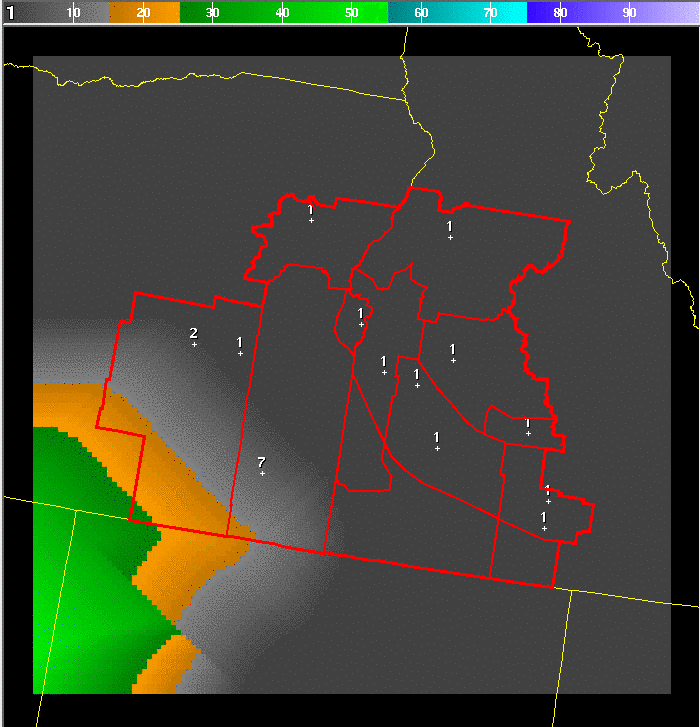
It is worth pointing out that for addition and subtraction, the edge and taper options
trend to “zero” or “no-change” at the edge of the edit area. However, for
multiplication and division, the edge and taper options trend to “one” at the edge of
the edit area, because multiplying or dividing by 1.0 gives the “no-change”
effect.
Elevation Option
The elevation option
allows you to perform your operation (add, subtract, multiply or divide) mostly
in areas of similar elevation. If the None option (the default) is chosen, then
elevation does not influence the operation.
However, if the Mountain option is chosen, then the full adjustment will take
place at the highest elevation in the edit area, and zero adjustment will take
place at the lowest elevation in the edit area. For example, with topography
like this:
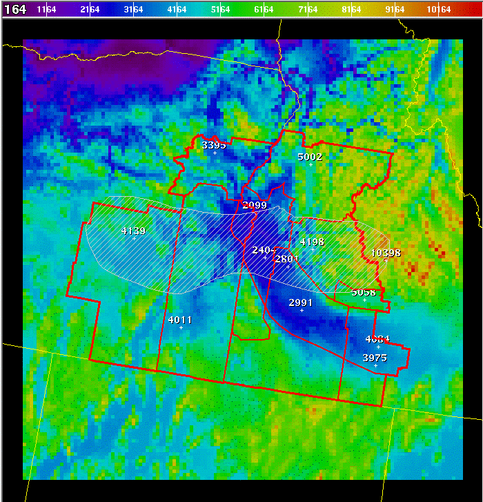
The highest elevation is along the extreme right edge of the edit area.
The lowest elevation is in the upper center of the edit area. The result
of adding 50 to our constant grid of 1, gives:
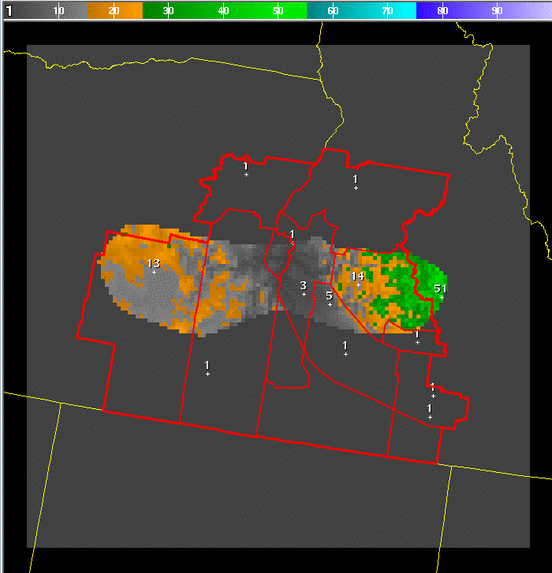
Note how only one pixel gets the final value of 51, and it is the point inside
the edit area with the highest elevation. Likewise, if the Valley option is chosen
Then the effect is just the opposite, the full adjustment is made at the lowest
elevation inside the edit area, and zero adjustment is made at the highest
elevation:
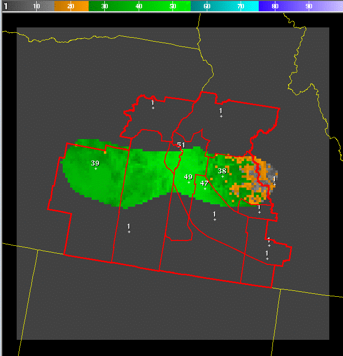
If the Specific option is chosen Then the full adjustment will take place at the
specific elevation. The effect will then taper down to zero adjustment at both
the highest and lowest elevation inside the edit area:
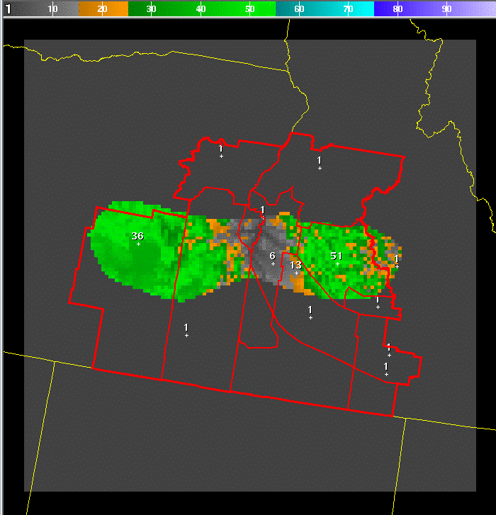
Note that if the elevation specified is above the highest elevation inside the
edit area, then the effect will be exactly the same as choosing the “Mountain”
option. Likewise, if the elevation specified is below the lowest elevation
inside the edit area, then the effect will be exactly the same as choosing
the “Valley” option.
Combined
Elevation and Edge Options
Any of the options
can be combined. As the examples above show, when using the elevation options
of Mountain, Valley, or Specific, there will likely be harsh gradients produced
at the edge of the edit area. If, for example, the Edge option is also chosen
along with the Mountain option, with an addition of 50, the result is:
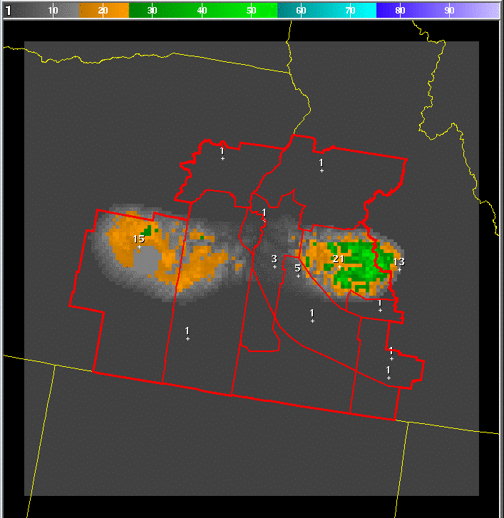
Note that the adjustment now blends in well with the rest of the grid, because
the edge effect is trending the adjustment back toward zero at the edges of the
edit area. However, also note that the adjustment is also putting most of the
adjustment at the higher elevations. It is worth pointing out that, in this case,
the gridbox that receives the full adjustment is not the gridbox with the highest
elevation (because that point is also on the edge of the edit area).
Instead, a point further inside the edit area, which has a high elevation,
receives the full adjustment:
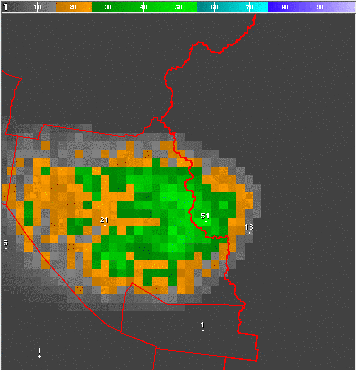
Mathematically, the two adjustment function are simply multiplied together, and
re-scaled, so that at least one gridbox receives the full adjustment.
Similarly, the combination of the Mountain option with the Taper option yields:
Here, the taper option would like to put the most adjustment in the middle of the
edit area, but the lowest elevations are also in that area, so the combination
puts the maximum adjustment at a relatively high elevation, but as close to the
center of the edit area as possible:
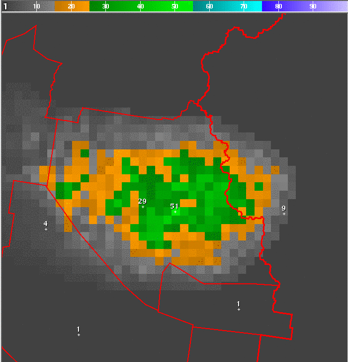
Old tools on the SmartTool repository were hard-coded combinations of some of these
options. For example, the UpMtn tool is essentially a combination of Add, Mountain
and Edge, with an edge width of 5 gridboxes. The DownValley tool is essentially a
combination of Subtract, Valley and Edge, with and edge width of 5 gridboxes.
The MultiplyDivide tool provided a combination of Multiply, None, Flat as well as
Divide, None, Flat options. Putting all these options into a single tool means
fewer tools on the GFE tool list, and provide some new combinations.